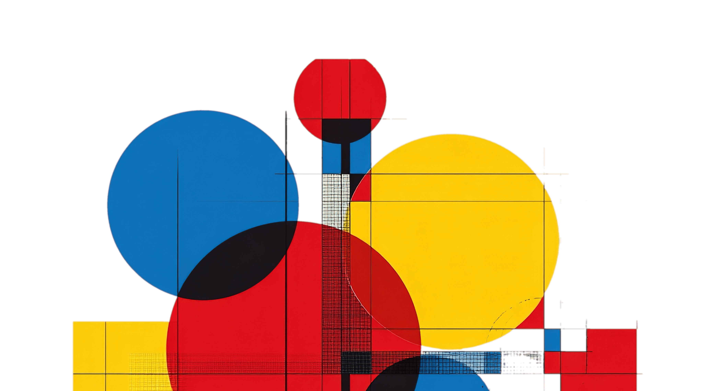
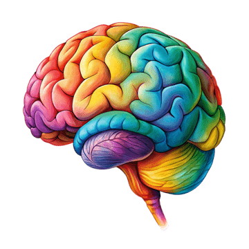
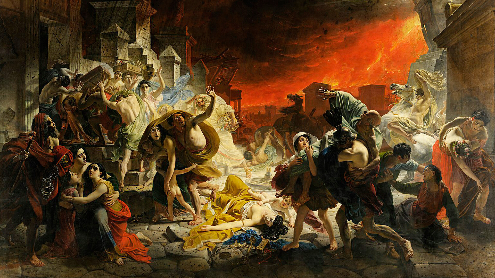
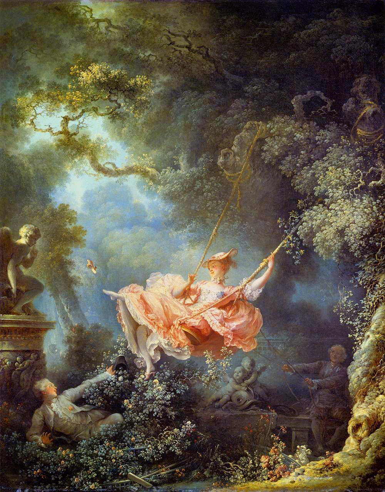
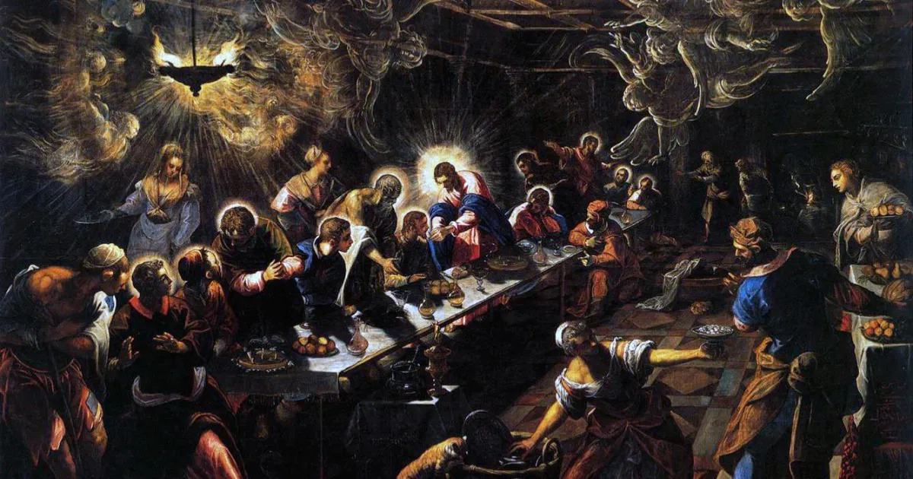

Psicologia
das
Cores

Introdução
A psicologia das cores estuda como cada cor influencia as emoções, percepções e
comportamentos das pessoas. Ela é muito usada no design, na publicidade, na moda e até
na arquitetura para transmitir sensações específicas e criar experiências mais
impactantes.

RECEPÇÃO
Azul, verde, branco e amarelo

CONFIANÇA
Azul, verde, ouro e amarelo.

AUTONOMIA
Azul, verde, preto, ouro e amarelo.

INTELIGÊNCIA
Azul, branco e prata

CIÊNCIA
Azul, branco, cinza e prata.

ESPERTO
Aazul, branco, verde e prata.

Laranja
Simboliza energia, criatividade, entusiasmo,.

Roxo
Simboliza Espiritualidade.

Roxo
Simboliza Espiritualidade.
Curiosidades
O vermelho, por exemplo, está associado à energia, paixão e urgência. É uma cor que chama atenção rapidamente e pode transmitir tanto amor quanto perigo, dependendo do contexto. Já o azul é ligado à calma, confiança e estabilidade, sendo muito utilizado por empresas que querem passar segurança e profissionalismo. O amarelo representa alegria, otimismo e criatividade, estimulando a atenção e a sensação de felicidade. Por outro lado, o verde está relacionado à natureza, equilíbrio e saúde, trazendo uma sensação de tranquilidade e bem-estar. O preto pode simbolizar elegância, poder e sofisticação, mas também pode estar associado ao mistério e à introspecção. Já o branco transmite pureza, simplicidade e paz, sendo frequentemente usado para dar sensação de espaço e limpeza visual. É importante lembrar que a percepção das cores pode variar de acordo com a cultura e as experiências pessoais de cada indivíduo. Por isso, a psicologia das cores não é uma regra fixa, mas uma ferramenta poderosa para comunicar sentimentos e influenciar a forma como as pessoas interpretam o mundo ao seu redor.
Por isso, durante séculos, a paleta da humanidade foi marcada por cores naturais e orgânicas, muito antes do surgimento dos pigmentos sintéticos e das cores vibrantes modernas.